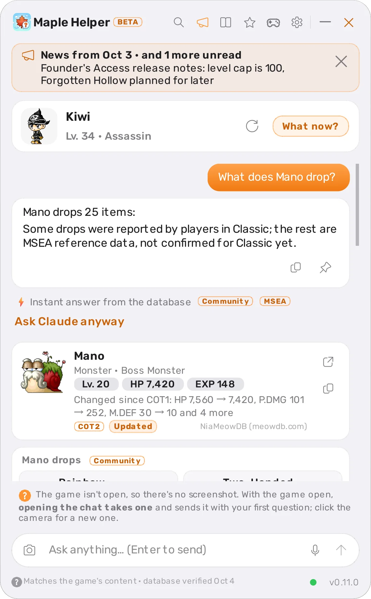
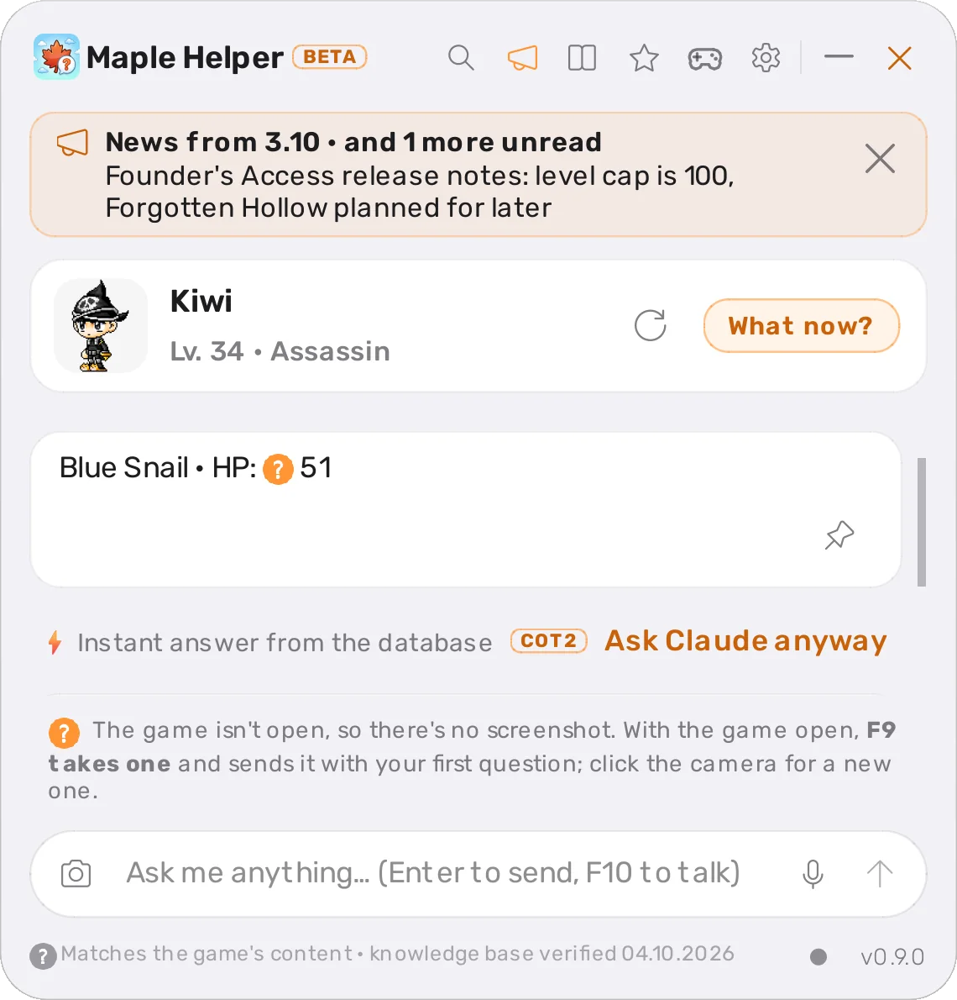
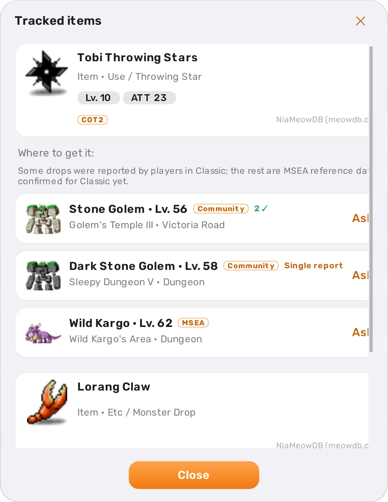
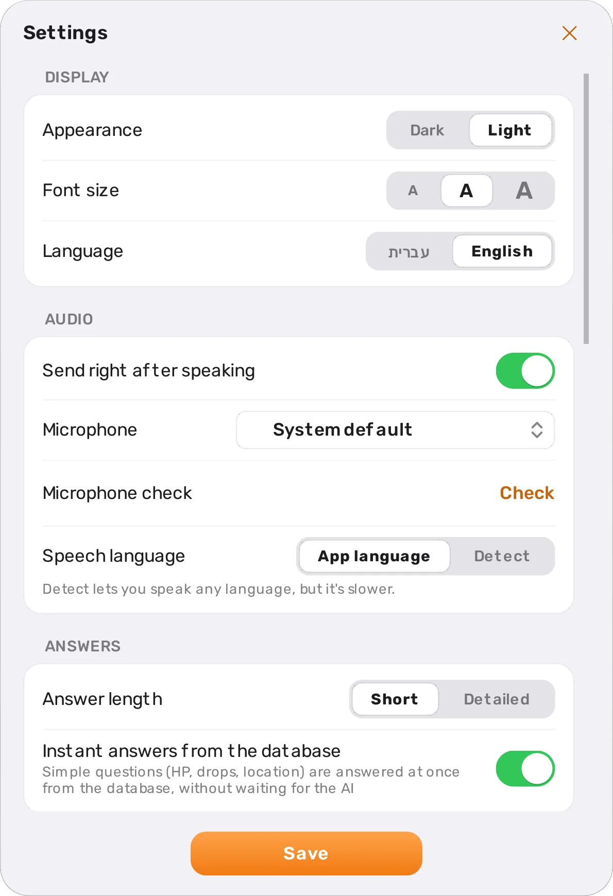
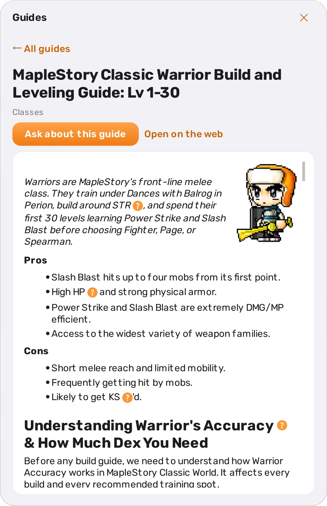
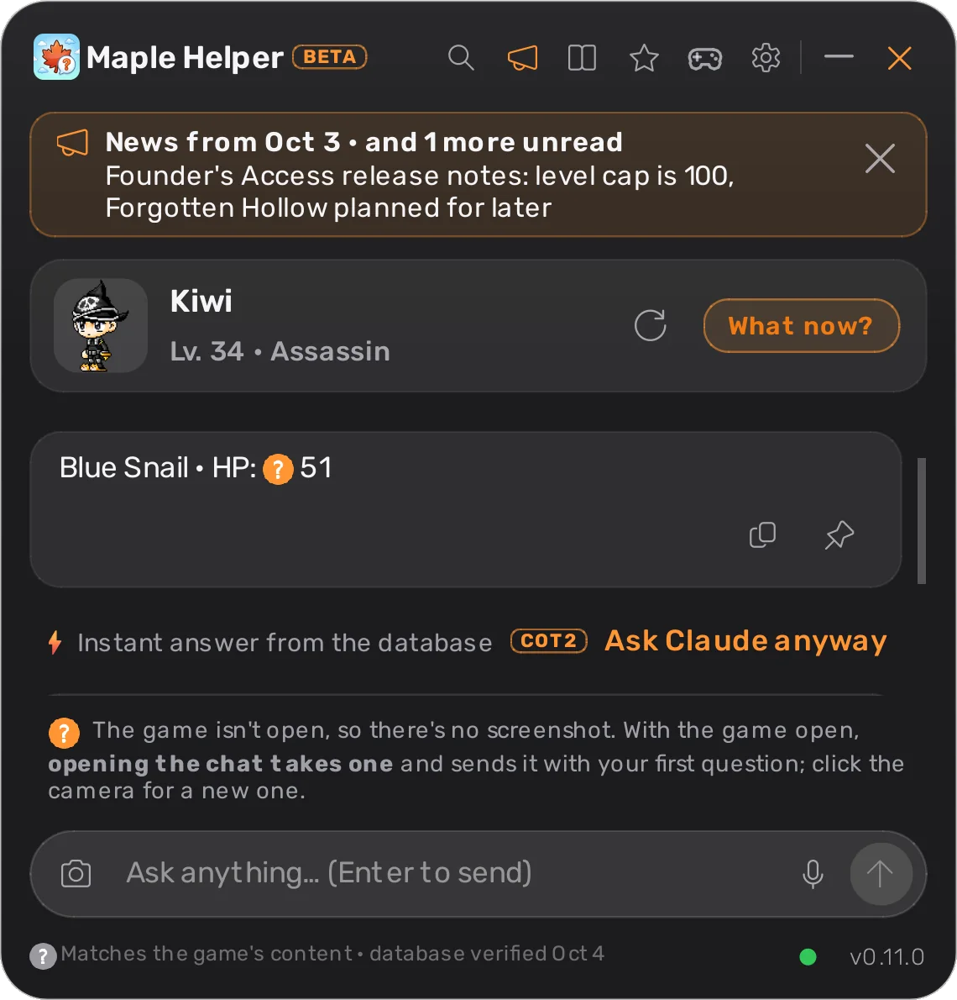
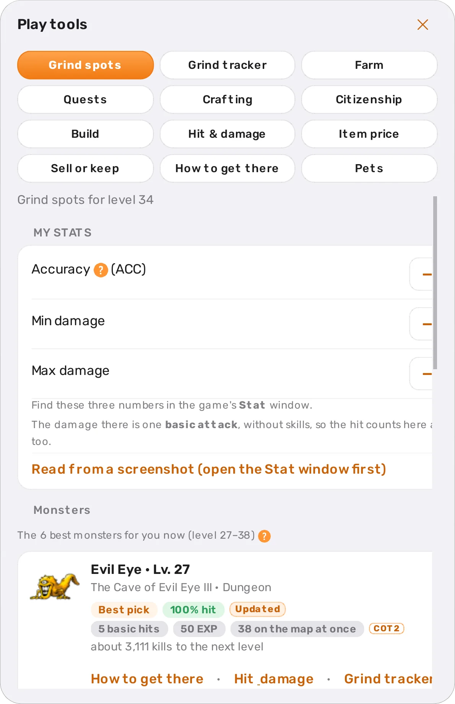
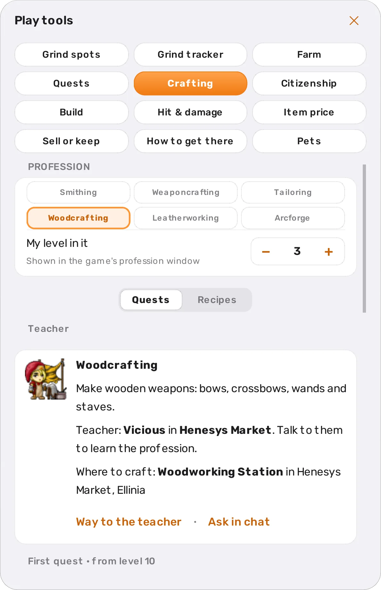
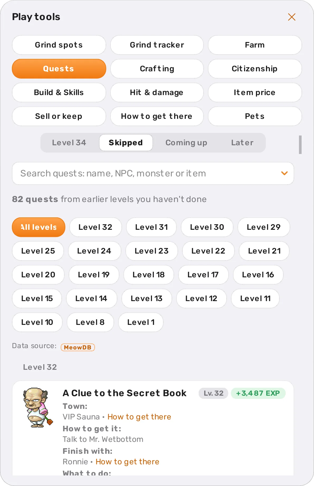

Maple Helper is a chat window that opens over MapleStory Classic World when you press F9.
Type a question in English or Hebrew and get an answer with pictures, based on the game's database and on what's on your screen right now.
Maple Helper is a desktop app. Open this page on the computer you play on to download it.

F9 opens over the game
Instant answer from the database
How it works
Three steps, and the game stays open
1
Press F9
The chat window opens over the game. Press it again to close it and keep playing.
2
Ask
Type, or press F10 and talk. When the chat opens, the app takes a screenshot of the game window and sends it with your question, so the answer fits what's happening in your game.
3
Get an answer
Simple questions, like a monster's HP or who drops an item, are answered instantly from the database on your computer. The AI you choose (Claude, ChatGPT, Gemini or Grok) answers the harder ones, using a MapleStory Classic database.
Features
What you'd look up on a wiki, inside the game
Instant answers
How much HP a monster has, what it drops, where an NPC is. Questions like these are answered in a second from the local database, without waiting for the AI.
Want the full explanation? One button sends the same question to your AI.

Cards with pictures
Monsters, items, maps, NPCs and quests show up as cards with a picture and stats. Tap a card to ask about it, like "where is it?" or "which one is easier for me?".
Items I'm hunting
Star an item to add it to your list. Each item shows who drops it, lowest level first, and on which map.

English or Hebrew
The whole app runs in English or Hebrew, your choice, and game names stay in English even inside Hebrew sentences. Hotkeys, font size and answer length are all adjustable.

32 guides, with pictures
Guides for every class, grind maps, the EXP table, the damage formula and more, with skill and item icons, character art, tables and tips. In Hebrew too.
The guides that fit your character come first, and one button sends a question about the guide to the chat.

Patch notes
When the game database updates, you see exactly what changed: new monsters and items, drops added or removed, changed stats. If an item on your list gets a new drop, you'll be told.
Your character, kept up to date
No need to update anything by hand. When the AI answers, Maple Helper looks at the game screen and updates your level, job and character picture. Keep several characters, each with its own history.
Ask out loud
Press F10, talk, press it again. Speech is transcribed on your computer with ivrit.ai models, which understand Hebrew too, and the recording never leaves it.
Your choice of AI
Claude, ChatGPT, Gemini or Grok, on your own account or an API key. Switch any time in settings. The app installs each one's official tool for you, with the progress right in the app, and keeps it read-only and on the game: it can't change files or browse the web, and questions about anything else get a short no.
Light or dark
A clean glass look with orange as the only color. Pick light or dark in settings.

Keeps itself updated
The game database updates in the background. On Windows the app updates itself too; on macOS you get a notice with a link to the new version.
Every update is checked against a checksum before it's installed
Your conversations and characters carry over between versions
New in 0.7
Play tools: calculators and planners beside the chat
The tools button in the chat opens a window that sits next to the game. Everything in it is worked out from the database and your character, without asking the AI or waiting.
Where to train, and a hit & damage calculator
Maps for your level, ranked: your hit chance, hits to kill, EXP per monster and how many kills to the next level.
In the calculator, pick a monster from a list with pictures to see the ACC you need to never miss, and where it lives.

Crafting
Six professions, each explained: what it makes, the teacher and their town, the first and master quests, and where to craft. Below: every recipe for your level, best value first.

Quests for your level
The quests you can take now and the ones coming up, with the NPC's picture, what to bring and what you get. Search by quest, NPC, monster or item, and mark the ones you've done.

Build plan
The AP, SP and gear tables from your class guide, with your level's row highlighted. Plus citizenship: which town suits you and its quests.
Prices, bag & shopping
NPC prices and a live Free Market median from player reports. A check of what to sell and what to keep for crafting, a shopping list for a map, and an EXP-per-hour meter.
A ? beside every term
Not sure what Avoid or AP means? Hover the orange mark for a short explanation, in the tools, the chat and the guides.
Install
What you need, and how to install
Setup takes a few minutes. The app walks you through every step, including installing and connecting your AI, right inside the app.
Requirements
Windows 10 or 11, or macOS 12 or laterOn a Mac you need Apple Silicon (M1 or newer).
An AI account: Claude, ChatGPT, Gemini or GrokClaude Pro or Max, a paid ChatGPT plan, your Google account for Gemini, or a Grok account (a free one works). Each runs through its maker's official tool: if you don't have it yet, the app installs it for you, with the progress in the app, and signs you in. An API key works too.
The game in a window modeBorderless or Windowed Fullscreen, so the chat can appear on top of it.
An internet connectionFor the AI's answers and updates. A microphone only if you want to talk.
macOS blocks the first launch, because the app isn't notarized by Apple yet. Go to System Settings → Privacy & Security and click "Open Anyway".
Allow Screen Recording when the app asks, then restart it. That's how it sees the game window.
Press fn + F9. The app lives in the menu bar, with no Dock icon.
MapleStory Classic World has a Mac version too: install the game, and Maple Helper finds its window on its own.
Privacy and safety
What the app does, and what it doesn't
Your data
Stays on your computerSettings, characters, chat history, voice recordings and the game database. No ads, no tracking.
Goes to the AI you chose, only when you askYour question, a screenshot of the game window, and the context needed to answer: your character's details, the recent conversation and short summaries of earlier ones. When you close a chat, it may be sent once more to summarize it for next time.
Never sent at allInstant answers from the database and voice transcription. Both happen on your computer.
Your game
Maple Helper only looks at the screen, like a screenshot tool. It opens its own window on top of the game, and that's it.
Never reads or changes the game's files or memory
Never presses keys or moves the mouse for you
Never plays for you or automates anything
It's an unofficial tool, not affiliated with Nexon. We can't promise how the game's rules will treat helper apps, so use it at your own risk.
FAQ
Frequently asked questions
Does Maple Helper cost anything?
The app is free and its code is open on GitHub. The AI you choose (Claude, ChatGPT, Gemini or Grok) gives the harder answers, on your own account: Claude Pro or Max, a paid ChatGPT plan, your Google account for Gemini, or a Grok account (a free one works, with a limited quota). A pay-as-you-go API key works too. Instant answers from the database don't count against your plan.
Can I get banned for using it?
Maple Helper only takes screenshots, like any screenshot tool. It doesn't read the game's memory or files, doesn't press keys and doesn't play for you.
Still, it's an unofficial tool with no connection to Nexon, and nobody can promise what the game's policy will be. Use it at your own risk.
Why does Windows warn me when I run the installer?
The installer isn't code-signed yet, so SmartScreen warns about an unrecognized app. Click "More info", then "Run anyway". The code is open on GitHub, and every update is checked against a checksum before it's installed.
Where does the game information come from?
From NiaMeowDB's public database, credited in the app. A copy of the database is kept on your computer and updates itself, and when it does, the app shows you what changed.
Does it work on a Mac?
Yes, on macOS 12 or later with Apple Silicon. MapleStory Classic World runs on Mac too, and Maple Helper finds the game window by its title.
What exactly is sent to the AI?
Only when you ask, and only to the AI you chose (Anthropic's Claude, OpenAI's ChatGPT, Google's Gemini or xAI's Grok): your question, a screenshot of the game window, and the context needed to answer (your character's details, the recent conversation and short summaries of earlier ones). Settings, the full history and voice recordings are kept on your computer. When you close a chat, it may be sent once more to summarize it for next time.
How do I update?
On Windows the app updates itself in the background. On macOS a notice in the menu links to the new version. The game database updates itself on both.
Ready to try it?
Download it, connect your AI, and press F9 next time you're in the game.